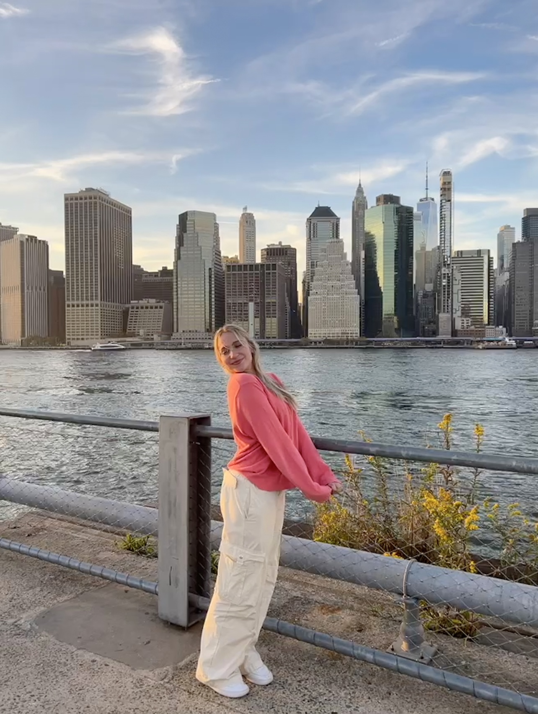

My name is Emilia Wasilewicz and I am seventeen years old. I am a student at New Explorations into Science, Technology and Math, also known as NEST+M. Growing up in the city definitely played a major role in shaping the type of person I am today. Not only did growing up in New York expose me to a vast variety of opportunities, but it also implemented this drive for success that motivates me to take advantaged of these opportunities. To learn more about New York through my lense I encourage you to read my "My New York Esssay."
